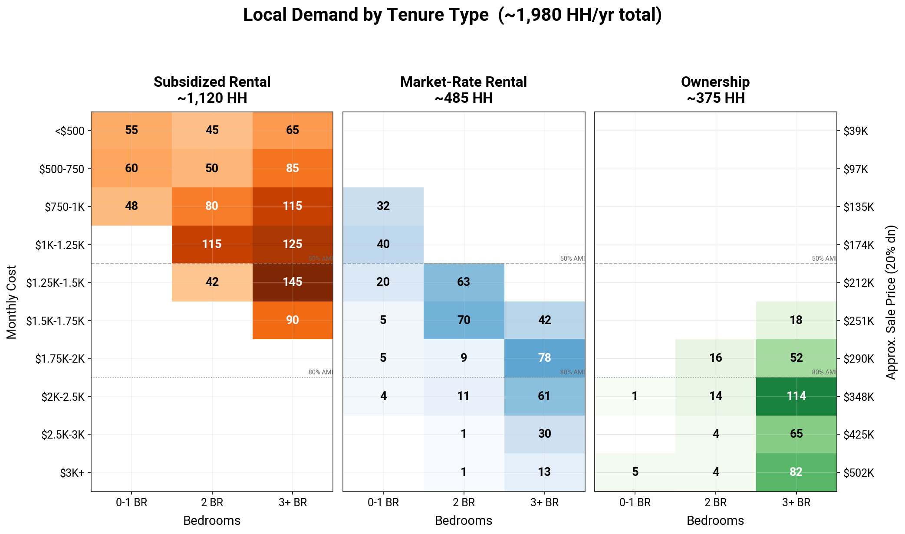

About this Study
This housing needs and workforce housing assessment will provide insights, strategic recommendations, and actionable implementation strategies to address current and future housing needs in Matteson, in coordination with the Comprehensive Plan.

Study goals:
- Evaluate housing and demographics to understand housing need and demand, and set a preliminary production target.
- Analyze workforce housing needs and costs for the workforce and missing middle housing potential.
- Assess local zoning and regulatory barriers to housing and market development feasibility.
- Identify policy tools and interventions to address identified housing needs and market opportunities.
Matteson's population is declining, but migration could reverse the trend.
For the past 5 years, Matteson has been losing households, with seniors making up a larger percentage of the population.
However, the region at large is growing. If Matteson can capture some of this regional growth, the population trend could reverse.
In recent years, Matteson has experienced negative net migration.
On average, net migration was positive across age groups until 2017. Since then, overall net migration has been low or negative, with a decline in in-migration and an increase in out-migration. Among working age groups (ages 20-64), the average has been negative for the past 5 years of data.
In Matteson, the decline in net migration is likely caused by many factors, including closure of major employers like the Lincoln Mall, smaller household sizes with fewer children, a lack of the right housing for people to move into, and an aging population.
Matteson is home to fewer families with children, and more small households.
Over the past decade, Matteson's mix of family types has shifted in ways that imply changes in local housing needs and preferences. For example:
More adults living with parents and roommates suggests people want to live in Matteson but can't find and/or afford housing of their own.
More seniors living alone suggests some older residents may be interested in downsizing from a house that is too large for them into something smaller and lower-maintenance.
Most nonfamily households earn less than the median income and may need smaller, lower-cost housing options in the future.
Matteson is adding more jobs than workers.
Following the closure of the mall and the COVID-19 pandemic, Matteson has added thousands of jobs, while the number of households has remained flat. As a result, a declining share of local jobs are held by local residents.
Nearly all (95.9%) people who work in Matteson live elsewhere, and people who work in Matteson are younger on average than the resident population.
The majority of homes in Matteson are 3+ bedroom single-family houses.
Most housing units in Matteson are detached single family with 3+ bedrooms. There are very few multifamily units and rentals available.
The housing stock offers limited options for young professionals and first-time homebuyers, who also prefer townhouses, condos, and apartments, as well as small (less than 3 bed) single-family homes.
Additionally, most nonfamily households earn less than the median income and may need smaller, lower-cost housing options in the future. This would be especially true for seniors aging in houses that are larger than they need and increasingly difficult and costly to maintain.
Home ownership in Matteson is affordable to most households, and the home vacany rate is high.
The typical home price in Matteson is affordable to a median-income household earning $119,000 per year.
The home vacancy rate is high, at 2.4%, and has measured above the healthy home vacancy rate of 1.5% since 2013. This indicates a mismatch between the type of homes available and the units desired by people who want to live in Matteson.
About 360 of Matteson's single-family homes are owned by real estate investors, the majority of them large out-of-state companies. These homes are used as rentals - another indication that Matteson's housing stock does not match community needs.
There are not enough rental units to meet demand.
Since 2020, the rental vacancy rate in Matteson has plummeted to near 0, well under a healthy vacancy rate of 7.4%
Rental units are extremely limited in Matteson - there are approximately 1,550 rental units, and in 2025, only 5% of those (80 units) were listed for rent.
Available rentals in Matteson consist of mostly 3+ bedroom single-family homes and townhomes, which demand higher rental prices. Rental units in apartments are more affordable, but are limited to a few older buildings.
| Rental Unit Type | Avg. Price | Avg. Bedrooms | Avg. Year Built | Number Listings |
|---|---|---|---|---|
| Single-family home | $2,180 | 3.3 | 1969 | 266 |
| Townhouse | $2,195 | 2.45 | 2002 | 61 |
| Apartment | $1,532 | 2.2 | 1978 | 86 |
How does Matteson compare to surrounding communities?
Housing conditions along with amenities and other lifestyle factors influence where people want to live. While Matteson has an abundance of entry-level single-family homes, it lags behind other communities in lifestyle metrics. Matteson's lower population of people under 35, and steep projected population decline, may be related to these factors.
| Matteson | Tinley Park | Homewood | Oak Park | |
|---|---|---|---|---|
| Housing Diversity | ||||
| % Multifamily homes | 15.2% | 17.0% | 14.0% | 46.1% |
| % Rentals | 22.2% | 12.0% | 19.6% | 37.0% |
| % Homes with less than 3 bedrooms | 20.6% | 36.9% | 29.8% | 56.3% |
| New Construction | ||||
| Avg. annual permits per 1,000 residents | 17.49 | 8.59 | no data | 20.78 |
| Single family : multifamily permit ratio | 19.9 | 2.0 | no data | 0.1 |
| Amenities | ||||
| Walkability | below average | below average | above average | most walkable |
| Retail vacancy rate | 15.9% | 5.9% | 3.6% | 2.2% |
| Number of parks | 6 | 40 | 27 | 17 |
| Jobs and Schools | ||||
| Avg. commute time (minutes) | 33.8 | 33.7 | 33.1 | 31.6 |
| Postsecondary enrollment | 47% | 49% | 75% | 86% |
| Population | ||||
| % Under 35 (2023) | 39.2% | 40.8% | 42.5% | 41.1% |
| Forecast change (2023–2050) | -28.7% | -19.2% | 2.7% | 10.8% |
Matteson needs about 515 new rental units to close existing housing gaps.
Matteson has pent-up demnad for rentals, and would need about 515 additional rental units to achieve a healthy vacancy rate.
Matteson can reverse population decline by capturing more households in the regional market.
Matteson's share of regional market demand could attract about 1,980 households annually. Based on an analysis of regional demand, these households are looking for units with the following characteristics:
- Subsidized rentals (rental units at low prices that would need subsidies for feasible construction) are regionally in demand for all unit types, especially larger ones.
- Market rate rentals have the highest regional demand for higher-end 2+ bedroom units.
- For ownership units, there is demand for 3+ bedroom units, with the greatest demand for units that are priced higher than much of Matteson's housing stock.
